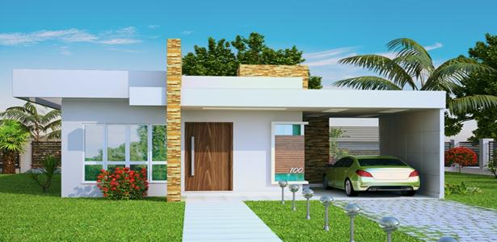
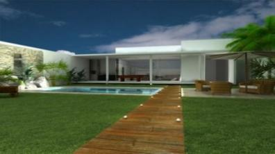

Modelos de projeto para inspiração

Modelos de ediculas muito bonita.

Nesta pagina contem muitos projeto de casa de baixo, médio e alto padrão
Para sua escola.
Olhe e se inspire para construir.
Atenção estes são apenas uma ideia de projetos, se gostar de algum
converse com seu engenheiro/arquiteto para implementar a ideia.
Avanildo Construções Construindo Sempre